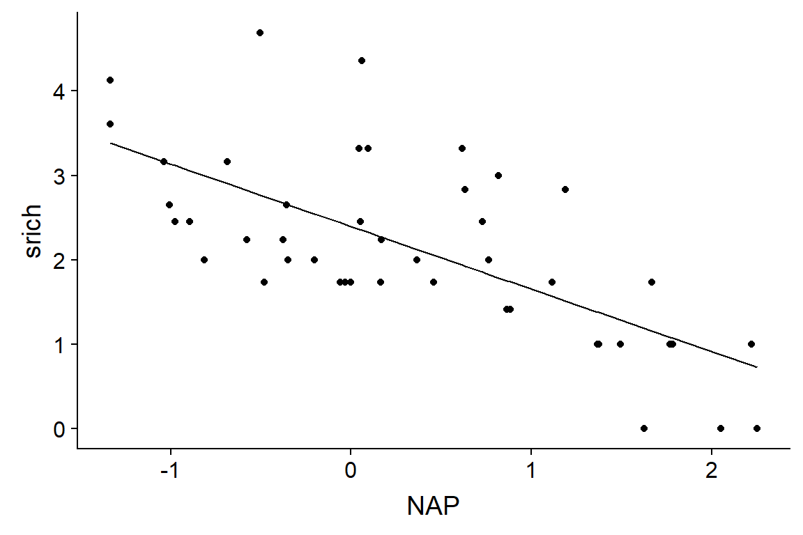
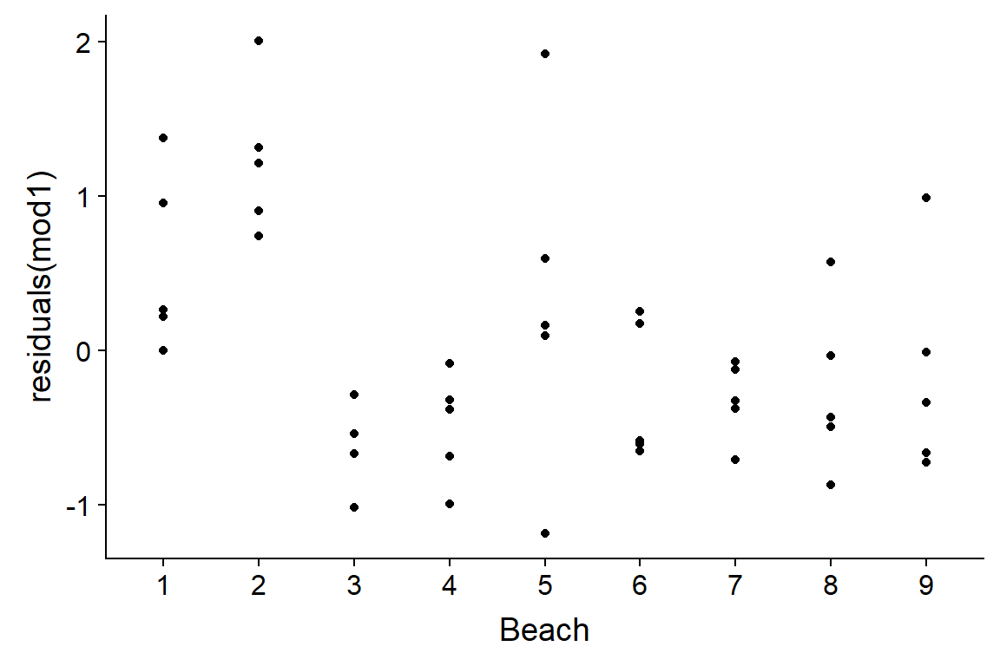
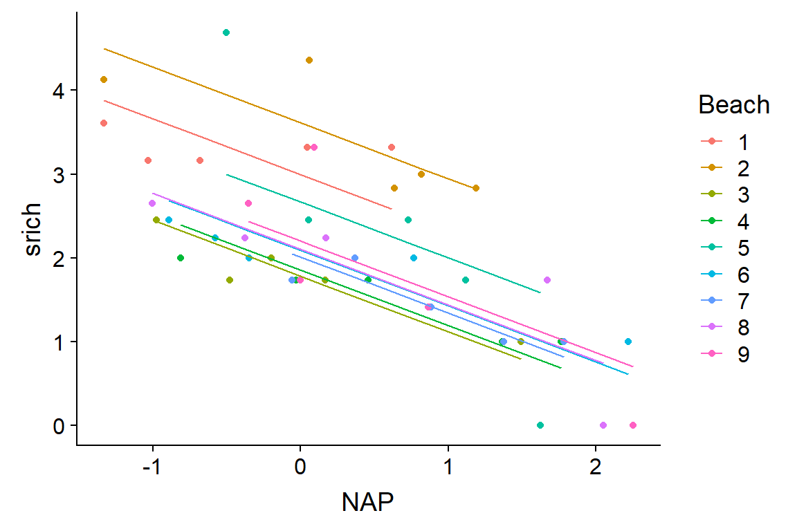
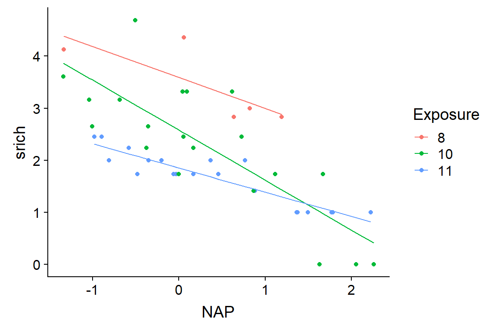
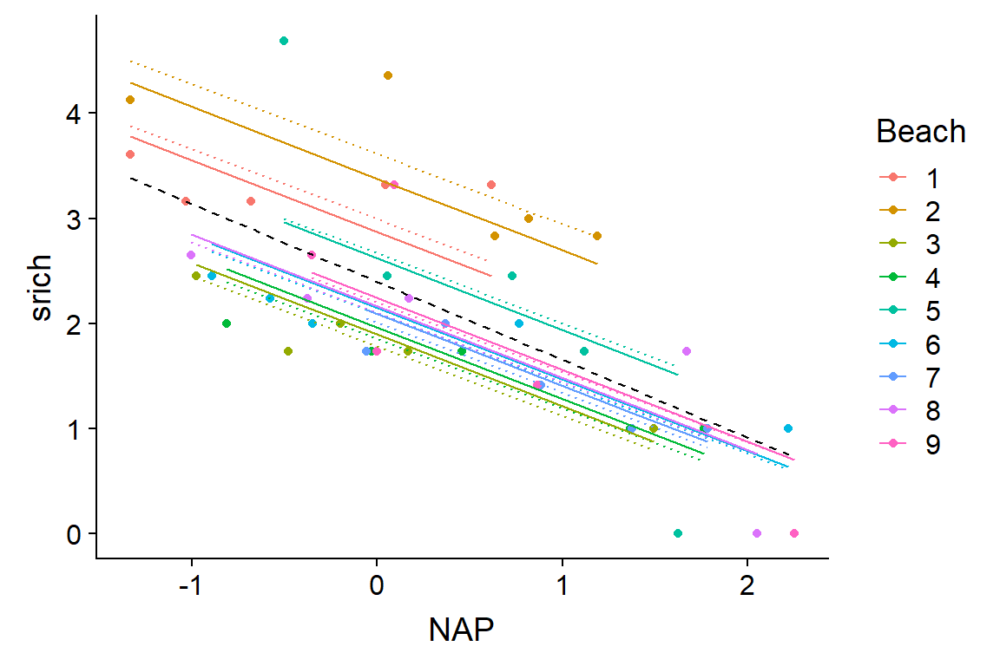
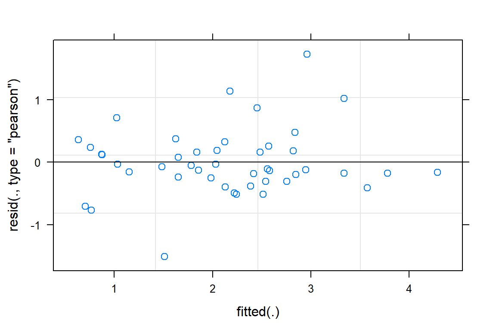
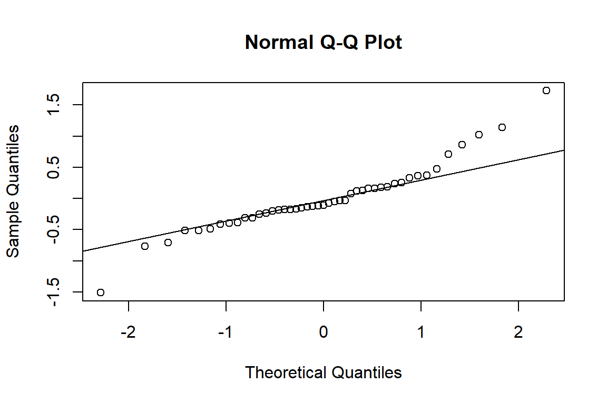
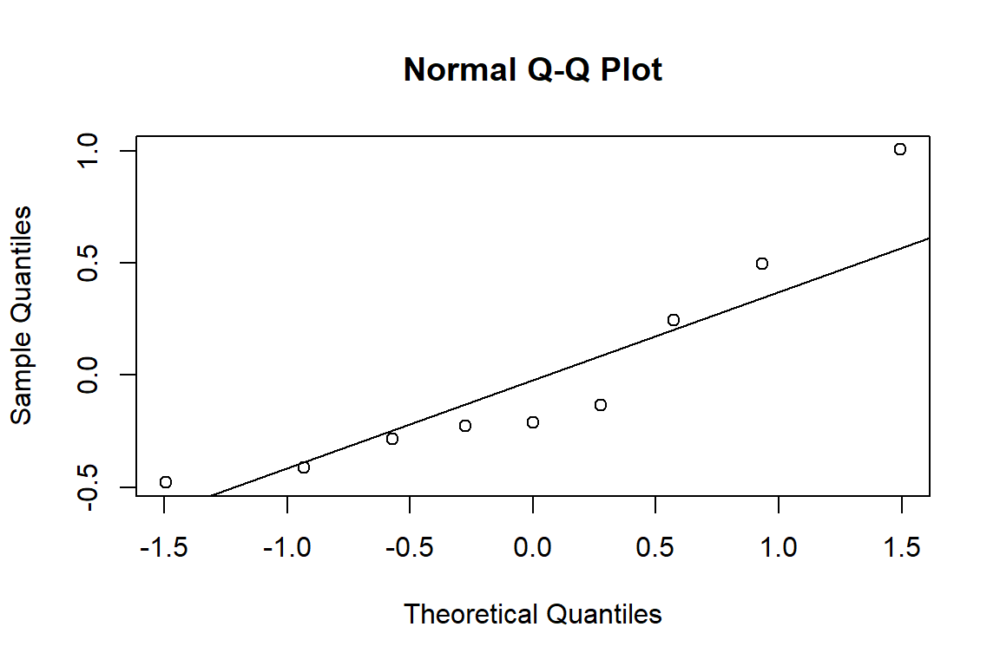

Modèles linéaires mixtes, partie 1
19 novembre 2018
Objectifs
Appliquer un modèle linéaire mixte à des données groupées.
Expliquer comment un modèle mixte constitue un compromis entre un modèle ignorant l’effet de groupe et un modèle à effets fixes par groupe.
Déterminer les situations où il est le plus bénéfique d’utiliser un modèle mixte.
Pourquoi les modèles mixtes?
Exercice
Objectif: Modéliser la croissance des arbres à partir d’un échantillon de 100 arbres de différentes espèces dans une parcelle de recherche, pour lesquels on a mesuré:
- la croissance annuelle (variable réponse);
- le diamètre (DHP) ;
- l’âge;
- l’indice de compétition (IC, basé sur le nombre et la taille des arbres voisins).
Vous pouvez supposer que les variables ont été transformées pour obtenir des effets linéaires et que la portion aléatoire de la réponse suit une distribution normale.
Exercice - Partie 1
| Croissance | DHP | Âge | IC | Espèce |
|---|---|---|---|---|
| … | … | … | … | … |
Quel type de modèle utiliseriez-vous pour relier la croissance au DHP, à l’âge et à l’IC?
Si la croissance moyenne dépend de l’espèce, comment inclure cet effet dans votre modèle?
Et si l’effet des prédicteurs numériques sur la croissance varie d’une espèce à l’autre?
Est-ce que ces modèles fonctionnent mieux si peu d’espèces (ex.: 2) ou beaucoup d’espèces (ex.: 20) sont représentées parmi les 100 arbres? Fonctionnent-ils mieux si le nombre d’arbres échantillonné est semblable d’une espèce à l’autre?
Avec ce modèle, pouvez-vous prédire la croissance d’une espèce non présente dans l’échantillon?
Exercice - Partie 2
Supposons que vous connaissez certaines caractéristiques de chaque espèce qui pourraient expliquer les différences entre espèces, par exemple:
- le degré de tolérance à l’ombre (variable catégorielle);
- la surface foliaire spécifique (SFS, variable numérique).
Exercice - Partie 2
| Croissance | DHP | Âge | IC | Espèce | Ombre | SFS |
|---|---|---|---|---|---|---|
| … | … | … | … | … | … | … |
Comment pouvez-vous inclure ces caractéristiques dans votre modèle?
Est-ce que le modèle proposé fonctionne mieux avec peu d’espèces ou beaucoup d’espèces?
Avec ce modèle, pouvez-vous prédire la croissance d’une espèce non présente dans l’échantillon?
Exercice - Partie 3
Finalement, supposons que vous avez mesuré la croissance et les autres prédicteurs individuels sur les mêmes 100 arbres pour trois années consécutives.
| ID Arbre | Année | Croissance | DHP | Âge | IC | Espèce | Ombre | SFS |
|---|---|---|---|---|---|---|---|---|
| … | … | … | … | … | … | … | … | … |
Comment pourriez-vous ajouter la variation de croissance d’une année à l’autre dans votre modèle?
Serait-il utile d’ajouter des variables météorologiques du site pour expliquer cette variation?
Est-ce que le fait de mesurer les mêmes arbres à chaque année influence l’exactitude du modèle?
Exemple
Richesse spécifique de la communauté benthique sur 45 sites intertidaux de 9 plages aux Pays-Bas.
## Sample Richness Exposure NAP Beach
## 1 1 11 10 0.045 1
## 2 2 10 10 -1.036 1
## 3 3 13 10 -1.336 1
## 4 4 11 10 0.616 1
## 5 5 10 10 -0.684 1
## 6 6 8 8 1.190 2- NAP: Position du site par rapport au niveau moyen de la mer.
- Exposure: Indice d’exposition de la plage.
Exemple
- Pour pouvoir utiliser un modèle linéaire (plutôt que Poisson), on applique une transformation racine carrée au nombre d’espèces.
- Cette transformation permet généralement d’homogénéiser la variance des données de comptage.
rikz <- mutate(rikz, srich = sqrt(Richness))Modèle 1: Ignorer les groupes
- Ce modèle inclut seulement le prédicteur mesuré au niveau du site (NAP).
mod1 <- lm(srich ~ NAP, rikz)
summary(mod1)##
## Call:
## lm(formula = srich ~ NAP, data = rikz)
##
## Residuals:
## Min 1Q Median 3Q Max
## -1.1898 -0.5874 -0.1233 0.2603 2.0089
##
## Coefficients:
## Estimate Std. Error t value Pr(>|t|)
## (Intercept) 2.3952 0.1241 19.295 < 2e-16 ***
## NAP -0.7409 0.1190 -6.224 1.72e-07 ***
## ---
## Signif. codes: 0 '***' 0.001 '**' 0.01 '*' 0.05 '.' 0.1 ' ' 1
##
## Residual standard error: 0.7851 on 43 degrees of freedom
## Multiple R-squared: 0.474, Adjusted R-squared: 0.4617
## F-statistic: 38.74 on 1 and 43 DF, p-value: 1.724e-07Modèle 1: Ignorer les groupes
- Prédictions du modèle en fonction du NAP.
rikz$fit1 <- fitted(mod1)
ggplot(rikz, aes(x = NAP, y = srich)) +
geom_point() +
geom_line(aes(y = fit1))
Modèle 1: Ignorer les groupes
- Les résidus ne sont pas indépendants: les observations d’une même plage sont plus semblables.
ggplot(rikz, aes(x = Beach, y = residuals(mod1))) +
geom_point()
Modèle 2: Effet de chaque groupe
- L’ajout du facteur
Beachau modèle permet d’estimer les différences systématiques de richesse entre les plages.
mod2 <- lm(srich ~ NAP + Beach, rikz)
summary(mod2)##
## Call:
## lm(formula = srich ~ NAP + Beach, data = rikz)
##
## Residuals:
## Min 1Q Median 3Q Max
## -1.58544 -0.28653 -0.06544 0.23657 1.69043
##
## Coefficients:
## Estimate Std. Error t value Pr(>|t|)
## (Intercept) 2.99457 0.26711 11.211 3.92e-13 ***
## NAP -0.66410 0.09655 -6.878 5.49e-08 ***
## Beach2 0.61544 0.37909 1.623 0.11346
## Beach3 -1.21158 0.37491 -3.232 0.00268 **
## Beach4 -1.13596 0.38510 -2.950 0.00564 **
## Beach5 -0.32863 0.38648 -0.850 0.40093
## Beach6 -0.90219 0.37835 -2.385 0.02265 *
## Beach7 -0.98741 0.39419 -2.505 0.01705 *
## Beach8 -0.89080 0.38392 -2.320 0.02628 *
## Beach9 -0.79350 0.38561 -2.058 0.04712 *
## ---
## Signif. codes: 0 '***' 0.001 '**' 0.01 '*' 0.05 '.' 0.1 ' ' 1
##
## Residual standard error: 0.5882 on 35 degrees of freedom
## Multiple R-squared: 0.7596, Adjusted R-squared: 0.6978
## F-statistic: 12.29 on 9 and 35 DF, p-value: 1.744e-08Modèle 2: Effet de chaque groupe
rikz$fit2 <- fitted(mod2)
ggplot(rikz, aes(x = NAP, y = srich, color = Beach)) +
geom_point() +
geom_line(aes(y = fit2))
Modèle 2: Effet de chaque groupe
- Modèle plus flexible: l’effet du NAP (la pente de la droite) peut varier d’une plage à l’autre.
mod2_inter <- lm(srich ~ NAP * Beach, rikz)
summary(mod2_inter)##
## Call:
## lm(formula = srich ~ NAP * Beach, data = rikz)
##
## Residuals:
## Min 1Q Median 3Q Max
## -0.84831 -0.16080 -0.03091 0.14909 0.98737
##
## Coefficients:
## Estimate Std. Error t value Pr(>|t|)
## (Intercept) 3.28835 0.24259 13.555 1.45e-13 ***
## NAP -0.05077 0.28172 -0.180 0.858319
## Beach2 0.30239 0.32158 0.940 0.355394
## Beach3 -1.50542 0.31542 -4.773 5.61e-05 ***
## Beach4 -1.56073 0.33715 -4.629 8.25e-05 ***
## Beach5 0.11078 0.35432 0.313 0.756947
## Beach6 -1.25466 0.31812 -3.944 0.000513 ***
## Beach7 -1.39537 0.41116 -3.394 0.002144 **
## Beach8 -1.17907 0.32697 -3.606 0.001242 **
## Beach9 -0.85912 0.33879 -2.536 0.017314 *
## NAP:Beach2 -0.54313 0.36261 -1.498 0.145780
## NAP:Beach3 -0.47943 0.37104 -1.292 0.207267
## NAP:Beach4 -0.37552 0.35511 -1.057 0.299666
## NAP:Beach5 -1.82561 0.38805 -4.705 6.74e-05 ***
## NAP:Beach6 -0.36229 0.33258 -1.089 0.285636
## NAP:Beach7 -0.48212 0.41379 -1.165 0.254155
## NAP:Beach8 -0.62429 0.32975 -1.893 0.069089 .
## NAP:Beach9 -1.01278 0.35527 -2.851 0.008256 **
## ---
## Signif. codes: 0 '***' 0.001 '**' 0.01 '*' 0.05 '.' 0.1 ' ' 1
##
## Residual standard error: 0.4508 on 27 degrees of freedom
## Multiple R-squared: 0.8911, Adjusted R-squared: 0.8225
## F-statistic: 13 on 17 and 27 DF, p-value: 7.079e-09Modèle 2: Effet de chaque groupe
- Le modèle avec interaction entre le NAP et la plage est surajusté.
library(AICcmodavg)
aictab(list(mod1 = mod1, mod2 = mod2, mod2_inter = mod2_inter))##
## Model selection based on AICc:
##
## K AICc Delta_AICc AICcWt Cum.Wt LL
## mod2 11 98.64 0.00 0.8 0.8 -34.32
## mod2_inter 19 101.41 2.77 0.2 1.0 -16.50
## mod1 3 110.47 11.82 0.0 1.0 -51.94Modèle 2: Effet de chaque groupe
rikz$fit2i <- fitted(mod2_inter)
ggplot(rikz, aes(x = NAP, y = srich, color = Beach)) +
geom_point() +
geom_line(aes(y = fit2i))
Modèle 3: Prédicteur lié aux groupes
- Plutôt que d’estimer un effet par plage, utiliser une variable pouvant expliquer cette différence entre plages (indice d’exposition).
mod3 <- lm(srich ~ NAP * Exposure, rikz)
summary(mod3)##
## Call:
## lm(formula = srich ~ NAP * Exposure, data = rikz)
##
## Residuals:
## Min 1Q Median 3Q Max
## -1.01561 -0.26022 -0.07632 0.18031 1.62592
##
## Coefficients:
## Estimate Std. Error t value Pr(>|t|)
## (Intercept) 3.5907 0.2641 13.597 < 2e-16 ***
## NAP -0.5939 0.2856 -2.079 0.04420 *
## Exposure10 -1.0101 0.2950 -3.424 0.00146 **
## Exposure11 -1.7375 0.2976 -5.839 8.68e-07 ***
## NAP:Exposure10 -0.3680 0.3113 -1.182 0.24429
## NAP:Exposure11 0.1281 0.3140 0.408 0.68549
## ---
## Signif. codes: 0 '***' 0.001 '**' 0.01 '*' 0.05 '.' 0.1 ' ' 1
##
## Residual standard error: 0.5639 on 39 degrees of freedom
## Multiple R-squared: 0.7538, Adjusted R-squared: 0.7223
## F-statistic: 23.88 on 5 and 39 DF, p-value: 6.417e-11Modèle 3: Prédicteur lié aux groupes
- Utilisons l’ANOVA pour vérifier si l’interaction est significative.
anova(mod3)## Analysis of Variance Table
##
## Response: srich
## Df Sum Sq Mean Sq F value Pr(>F)
## NAP 1 23.8787 23.8787 75.0869 1.255e-10 ***
## Exposure 2 11.6166 5.8083 18.2643 2.527e-06 ***
## NAP:Exposure 2 2.4831 1.2416 3.9041 0.02848 *
## Residuals 39 12.4026 0.3180
## ---
## Signif. codes: 0 '***' 0.001 '**' 0.01 '*' 0.05 '.' 0.1 ' ' 1Modèle 3: Prédicteur lié aux groupes
rikz$fit3 <- fitted(mod3)
ggplot(rikz, aes(x = NAP, y = srich, color = Exposure)) +
geom_point() +
geom_line(aes(y = fit3))
Modèle 3: Prédicteur lié aux groupes
- Par rapport au modèle précédent, cette approche est plus parcimonieuse (moins de paramètres à ajuster) et permet d’expliquer les différences entre plages en fonction de paramètres environnementaux.
On peut donc appliquer les prédictions du modèle à d’autres plages en autant qu’on connaisse leur indice d’exposition.
Une régression linéaire classique ne peut inclure à la fois une variable catégorielle indiquant le groupe et un prédicteur défini pour chaque groupe.
Combiner les modèles 2 et 3
- Le facteur Beach contient les différences entre plages, il ne reste rien à expliquer avec Exposure.
mod_exp_beach <- lm(srich ~ NAP + Beach + Exposure, rikz)
summary(mod_exp_beach)##
## Call:
## lm(formula = srich ~ NAP + Beach + Exposure, data = rikz)
##
## Residuals:
## Min 1Q Median 3Q Max
## -1.58544 -0.28653 -0.06544 0.23657 1.69043
##
## Coefficients: (2 not defined because of singularities)
## Estimate Std. Error t value Pr(>|t|)
## (Intercept) 2.99457 0.26711 11.211 3.92e-13 ***
## NAP -0.66410 0.09655 -6.878 5.49e-08 ***
## Beach2 0.61544 0.37909 1.623 0.11346
## Beach3 -1.21158 0.37491 -3.232 0.00268 **
## Beach4 -1.13596 0.38510 -2.950 0.00564 **
## Beach5 -0.32863 0.38648 -0.850 0.40093
## Beach6 -0.90219 0.37835 -2.385 0.02265 *
## Beach7 -0.98741 0.39419 -2.505 0.01705 *
## Beach8 -0.89080 0.38392 -2.320 0.02628 *
## Beach9 -0.79350 0.38561 -2.058 0.04712 *
## Exposure10 NA NA NA NA
## Exposure11 NA NA NA NA
## ---
## Signif. codes: 0 '***' 0.001 '**' 0.01 '*' 0.05 '.' 0.1 ' ' 1
##
## Residual standard error: 0.5882 on 35 degrees of freedom
## Multiple R-squared: 0.7596, Adjusted R-squared: 0.6978
## F-statistic: 12.29 on 9 and 35 DF, p-value: 1.744e-08Combiner les modèles 2 et 3
- Si on essayait de modéliser une variation de la pente de
srich ~ NAPen fonction de l’indice d’exposition et de la plage, ce modèle serait équivalent au modèle 2 avec interaction.
mod_exp_beach <- lm(srich ~ NAP * Exposure + NAP * Beach , rikz)
all.equal(fitted(mod_exp_beach), fitted(mod2_inter)) ## [1] TRUEModèle 4: Modèle linéaire en deux étapes
D’abord estimer les différences de richesse entre plages à partir des données des sites, puis modéliser l’effet des plages en fonction de l’indice d’exposition.
- Étape 1: Observation \(k\) de la plage \(j\)
\[ y_k \sim N(\alpha_{j[k]} + \beta x_{1k}, \sigma_y) \]
- Étape 2: Ordonnée à l’origine de la plage \(j\)
\[ \alpha_j \sim N(\gamma_0 + \gamma_1 u_{1j}, \sigma_\alpha) \]
Modèle 4 - Étape 1
- On ajoute
- 1à la formule pour fixer l’ordonnée à l’origine à 0.
mod4_1 <- lm(srich ~ NAP + Beach - 1, rikz)
summary(mod4_1)##
## Call:
## lm(formula = srich ~ NAP + Beach - 1, data = rikz)
##
## Residuals:
## Min 1Q Median 3Q Max
## -1.58544 -0.28653 -0.06544 0.23657 1.69043
##
## Coefficients:
## Estimate Std. Error t value Pr(>|t|)
## NAP -0.66410 0.09655 -6.878 5.49e-08 ***
## Beach1 2.99457 0.26711 11.211 3.92e-13 ***
## Beach2 3.61000 0.26440 13.653 1.39e-15 ***
## Beach3 1.78298 0.26307 6.778 7.41e-08 ***
## Beach4 1.85861 0.26839 6.925 4.78e-08 ***
## Beach5 2.66594 0.26948 9.893 1.12e-11 ***
## Beach6 2.09238 0.26404 7.924 2.55e-09 ***
## Beach7 2.00715 0.27616 7.268 1.73e-08 ***
## Beach8 2.10377 0.26751 7.864 3.04e-09 ***
## Beach9 2.20106 0.26879 8.189 1.20e-09 ***
## ---
## Signif. codes: 0 '***' 0.001 '**' 0.01 '*' 0.05 '.' 0.1 ' ' 1
##
## Residual standard error: 0.5882 on 35 degrees of freedom
## Multiple R-squared: 0.9527, Adjusted R-squared: 0.9392
## F-statistic: 70.48 on 10 and 35 DF, p-value: < 2.2e-16Modèle 4 - Étape 2
- On crée un jeu de données avec une rangée par plage et on ajoute les effets de plage estimés à l’étape 1.
rikz_beach <- distinct(rikz, Beach, Exposure)
rikz_beach$coef <- coef(mod4_1)[-1] # Le coefficient 1 est NAP
rikz_beach## Exposure Beach coef
## 1 10 1 2.994566
## 2 8 2 3.610002
## 3 11 3 1.782984
## 4 11 4 1.858608
## 5 10 5 2.665938
## 6 11 6 2.092379
## 7 11 7 2.007155
## 8 10 8 2.103766
## 9 10 9 2.201064Modèle 4 - Étape 2
- Modèle de l’effet de plage (coefficient de l’étape 1) en fonction de l’indice d’exposition.
mod4_2 <- lm(coef ~ Exposure, rikz_beach)
summary(mod4_2)##
## Call:
## lm(formula = coef ~ Exposure, data = rikz_beach)
##
## Residuals:
## Min 1Q Median 3Q Max
## -0.3876 -0.1523 0.0000 0.1571 0.5032
##
## Coefficients:
## Estimate Std. Error t value Pr(>|t|)
## (Intercept) 3.6100 0.3101 11.640 2.42e-05 ***
## Exposure10 -1.1187 0.3467 -3.226 0.01800 *
## Exposure11 -1.6747 0.3467 -4.830 0.00291 **
## ---
## Signif. codes: 0 '***' 0.001 '**' 0.01 '*' 0.05 '.' 0.1 ' ' 1
##
## Residual standard error: 0.3101 on 6 degrees of freedom
## Multiple R-squared: 0.803, Adjusted R-squared: 0.7373
## F-statistic: 12.23 on 2 and 6 DF, p-value: 0.007645Modèle 4
Cette approche traite chaque plage comme une seule observation à la deuxième étape.
Si le nombre d’échantillons différait d’une plage à l’autre, ce modèle sous-représenterait les plages mieux échantillonnés.
Modèles linéaires mixtes
Modèles linéaires mixtes
Ces modèles sont semblables à la régression en deux étapes que nous avons effectuée, mais les deux étapes sont réalisées simultanément.
Ces modèles sont surtout utiles pour les cas suivants:
- données groupées ou hiérarchisées (ex.: région, site, placette);
- variables explicatives définies à plusieurs niveaux (individu et groupe);
- beaucoup de groupes et/ou peu d’observations par groupe;
- besoin d’estimer la variation entre groupes;
- besoin de généraliser les résultats à des groupes non observés.
Modèles linéaires mixtes
Un modèle linéaire mixte est une régression linéaire dont un ou plusieurs des coefficients varient d’un groupe d’observations à une autre, et où cette variation est modélisée par une distribution statistique.
Ils sont aussi connus sous le nom de modèles hiérarchiques ou multi-niveaux, car ils modélisent la variation à au moins deux niveaux (observation individuelle et groupe).
Dans ce cours-ci, nous traiterons des modèles mixtes où seule l’ordonnée à l’origine varie par groupe.
Représentation mathématique
- \(\hat{y_k}\) dépend des prédicteurs \(x_1\), \(x_2\), etc., avec une ordonnée à l’origine spécifique au groupe \(j\) qui contient l’observation \(k\).
\[ \hat{y_k} = \alpha_{j[k]} + \beta_1 x_{1k} + \beta_2 x_{2k} + ...\]
- Comme pour le modèle de régression linéaire, \(y_k\) suit une distribution normale.
\[ y_k \sim N(\hat{y_k}, \sigma_y) \]
- \(\alpha_j\) est considérée comme une variable aléatoire normalement distribuée parmi une “population” de groupes:
\[ \alpha_{j} \sim N(\mu_\alpha, \sigma_\alpha) \]
Représentation mathématique
L’effet de groupe \(\alpha_j\) est un effet aléatoire, en opposition aux effets fixes qui sont estimés de façon indépendante sans faire partie d’une distribution.
Le modèle est dit mixte car il contient à la fois des effets fixes (les \(\beta\) associés aux prédicteurs \(x_1\), \(x_2\), etc.) et des effets aléatoires.
On suppose une distribution normale pour \(\alpha_j\) car c’est la distribution la plus “naturelle” à supposer si on ne connaît que la moyenne et l’écart-type.
Modèle linéaire mixte avec R
Nous utilisons la fonction
lmerdu package lme4 pour ajuster des modèles linéaires mixtes.Cette fonction accepte une formule du même type que
lm. Les effets aléatoires ont une syntaxe particulière dans la formule:- Par exemple, le terme
(1 | Beach)indique que l’ordonnée à l’origine (symbolisée par la “variable”1) varie de façon aléatoire entre les groupes définis parBeach.
- Par exemple, le terme
Modèle linéaire mixte avec R
library(lme4)
mmod <- lmer(srich ~ NAP + (1 | Beach), rikz)
summary(mmod)## Linear mixed model fit by REML ['lmerMod']
## Formula: srich ~ NAP + (1 | Beach)
## Data: rikz
##
## REML criterion at convergence: 97.1
##
## Scaled residuals:
## Min 1Q Median 3Q Max
## -2.5693 -0.4286 -0.1869 0.3230 2.9399
##
## Random effects:
## Groups Name Variance Std.Dev.
## Beach (Intercept) 0.2957 0.5438
## Residual 0.3460 0.5882
## Number of obs: 45, groups: Beach, 9
##
## Fixed effects:
## Estimate Std. Error t value
## (Intercept) 2.37424 0.20405 11.635
## NAP -0.68063 0.09501 -7.163
##
## Correlation of Fixed Effects:
## (Intr)
## NAP -0.162Intervalles de confiance
lmerne fournit pas de valeur \(p\) pour les effets estimés, car leur distribution exacte n’est pas connnue.
- La fonction
confintpermet d’estimer les intervalles de confiance.
confint(mmod)## Computing profile confidence intervals ...## 2.5 % 97.5 %
## .sig01 0.2664346 0.9469885
## .sigma 0.4682062 0.7455375
## (Intercept) 1.9537581 2.7916024
## NAP -0.8729868 -0.4948024Effets fixes et aléatoires
- Les fonctions
fixefetranefpermettent d’extraire les effets fixes et aléatoires du modèle, respectivement.
fixef(mmod)## (Intercept) NAP
## 2.3742423 -0.6806307ranef(mmod)## $Beach
## (Intercept)
## 1 0.4962684
## 2 1.0050818
## 3 -0.4791252
## 4 -0.4104708
## 5 0.2444787
## 6 -0.2252788
## 7 -0.2858167
## 8 -0.2124511
## 9 -0.1326862Effets fixes et aléatoires
- La fonction
coefretourne les effets estimés par groupe.
coef(mmod)## $Beach
## (Intercept) NAP
## 1 2.870511 -0.6806307
## 2 3.379324 -0.6806307
## 3 1.895117 -0.6806307
## 4 1.963772 -0.6806307
## 5 2.618721 -0.6806307
## 6 2.148964 -0.6806307
## 7 2.088426 -0.6806307
## 8 2.161791 -0.6806307
## 9 2.241556 -0.6806307
##
## attr(,"class")
## [1] "coef.mer"Effets de groupe fixes ou aléatoires
rikz$fitmm <- fitted(mmod)
ggplot(rikz, aes(x = NAP, y = srich, color = Beach)) +
geom_point() +
geom_line(aes(y = fit1), color = "black", linetype = "dashed") +
geom_line(aes(y = fit2), linetype = "dotted") +
geom_line(aes(y = fitmm))
Contraction des estimés
Les prédictions du modèle mixte pour chaque plage sont décalées vers la moyenne générale. Cet effet est plus prononcé à mesure qu’on s’éloigne de la moyenne (voir par exemple la plage 2 en haut du graphique).
En statistique, on parle d’une contraction (shrinkage) des estimés des effets de groupe.
Compromis entre sous-ajustement et surajustement
Puisque les ordonnées à l’origine sont supposées provenir d’une distribution commune, le modèle mixte estime l’ordonnée à l’origine de chaque plage en tenant compte non seulement des valeurs mesurées à cette plage, mais aussi de celles des autres plages.
Les différences entre les valeurs moyennes mesurées par plage peuvent être dues soit à des différences réelles de richesse spécifique entre les plages, soit au hasard de l’échantillonnage.
Le modèle mixte est donc un compromis entre (1) ignorer totalement les différences entre plages et (2) estimer indépendamment la moyenne de chaque plage à partir de ses 5 points.
Graphiques de diagnostic
- Un seul graphique produit par
plot(résidus vs. valeurs attendues)
plot(mmod)
Diagramme quantile-quantile des résidus
qqnorm(residuals(mmod))
qqline(residuals(mmod))
Diagramme quantile-quantile des effets de groupe
beach_coef <- ranef(mmod)$Beach
qqnorm(beach_coef$`(Intercept)`)
qqline(beach_coef$`(Intercept)`)
Modèle mixte avec prédicteur lié aux groupes
Modèle mixte avec prédicteur lié aux groupes
- Modèle pour l’ordonnée à l’origine du groupe \(j\):
\[ \alpha_{j} \sim N(\mu_\alpha, \sigma_\alpha) \]
- Si \(\mu_\alpha\) n’est pas constante, reliée linéairement à un prédicteur \(u_1\):
\[ \mu_\alpha = \gamma_0 + \gamma_1 u_1 \]
Modèle mixte avec prédicteur lié aux groupes
- Ré-écrivons le modèle en 1 équation:
\[ y_k = \gamma_0 + \gamma_1 u_{1j[k]} + \beta_1 x_{1k} + \beta_2 x_{2k} + \nu_{j[k]} + \epsilon_k \]
- Les deux derniers termes représentent la variation aléatoire par groupe et par observation individuelle:
\[ \nu_j \sim N(0, \sigma_\alpha) \] \[ \epsilon_k \sim N(0, \sigma_y) \]
Modèle mixte avec prédicteur lié aux groupes
- Il suffit d’ajouter le prédicteur de groupe à la formule dans
lmer:
mmod_exp <- lmer(srich ~ NAP + Exposure + (1 | Beach), rikz)
summary(mmod_exp)## Linear mixed model fit by REML ['lmerMod']
## Formula: srich ~ NAP + Exposure + (1 | Beach)
## Data: rikz
##
## REML criterion at convergence: 86
##
## Scaled residuals:
## Min 1Q Median 3Q Max
## -2.38707 -0.48281 -0.07465 0.47962 3.03495
##
## Random effects:
## Groups Name Variance Std.Dev.
## Beach (Intercept) 0.02315 0.1521
## Residual 0.34658 0.5887
## Number of obs: 45, groups: Beach, 9
##
## Fixed effects:
## Estimate Std. Error t value
## (Intercept) 3.62081 0.30510 11.867
## NAP -0.70349 0.09107 -7.724
## Exposure10 -1.11766 0.33998 -3.287
## Exposure11 -1.66923 0.34021 -4.907
##
## Correlation of Fixed Effects:
## (Intr) NAP Exps10
## NAP -0.082
## Exposure10 -0.891 -0.007
## Exposure11 -0.888 -0.037 0.800Diagramme quantile-quantile des effets aléatoires
beach_coef <- ranef(mmod_exp)$`Beach`
qqnorm(beach_coef$`(Intercept)`)
qqline(beach_coef$`(Intercept)`)
Corrélation intra-classe
\[ \frac{\sigma_\alpha^2}{\sigma_\alpha^2 + \sigma_y^2} \]
- \(\sigma_\alpha\) représente l’écart-type de la réponse moyenne entre les groupes et \(\sigma_y\) représente l’écart-type de la réponse entre observations d’un même groupe.
- Rapport tend vers 0 si \(\sigma_y \gg \sigma_\alpha\) et vers 1 si \(\sigma_\alpha \gg \sigma_y\).
Corrélation intra-classe
La corrélation intra-classe est d’environ 0.45 pour le premier modèle (
mmod) et diminue à 0.06 en tenant compte de l’indice d’exposition (modèlemmod_exp).D’un point de vue pratique, ce rapport nous indique quelle échelle contribue davantage à la variation de la réponse, donc à quelle échelle nous pourrions échantillonner davantage pour réduire l’incertitude du modèle.
Résumé
Un modèle linéaire mixte (aussi appelé modèle multi-niveaux) est une extension de la régression linéaire pour des données groupées, où certains des coefficients varient de façon aléatoire d’un groupe à l’autre.
Dans ce cours, nous avons vu des exemples où l’ordonnée à l’origine inclut un effet aléatoire. Dans le prochain cours, nous verrons comment ajouter des effets aléatoires à d’autres coefficients.
Un modèle mixte constitue un compromis entre une régression linéaire qui ignore la structure groupée et une régression qui estime un effet fixe séparé pour chaque groupe.
Résumé
Le modèle mixte corrige l’estimation des effets de chaque groupe pour les rapprocher de la tendance générale (contraction). Plus l’échantillon d’un groupe est faible, plus cette correction est importante. Pour cette raison, les modèles mixtes sont particulièrement utiles lorsqu’on a un grand nombre de groupes et peu d’observations dans certains groupes.
Dans une régression linéaire classique, on ne peut inclure à la fois un effet fixe par groupe et un prédicteur défini à l’échelle du groupe. Un modèle mixte peut inclure à la fois l’effet aléatoire des groupes et une variable explicative définie à l’échelle du groupe.
Références
Gelman, A. and Hill, J. (2006) Data Analysis Using Regression and Multilevel/Hierarchical Models. Cambridge, Cambridge University Press.
Zuur, A.F., Ieno, E.N., Walker, N.J., Saveliev, A.A., Smith, G.M. (2009) Mixed Effects Models and Extensions in Ecology with R. New York, Springer-Verlag.